Лабораторні роботи
з функціонального програмування
студентки ІПЗ-41
Конторер Аліни
Лабораторна №1
Завдання
6.1. З n солдатів, вишикуваних в шеренгу, потрібно відібрати кількох в розвідку. Для здійснення цього виконується наступна операція: якщо солдат в шерензі більше ніж 3, то видаляються всі солдати, які стоять на парних позиціях, або всі солдати, які стоять на непарних позиціях. Ця процедура повторюється до тих пір, поки в шерензі залишиться 3 або менше солдатів. Їх і відсилають в розвідку. Обчислити кількість способів, якими можуть бути сформовані групи розвідників рівно з трьох осіб. Кількість солдатів n вводиться з клавіатури. Рекурентне співвідношення для обчислення кількості способів f(n), якими можна сформувати групи розвідників з n осіб в шерензі, таке:
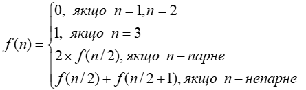
Код
(define (f num)
(define x 0)
(if (= num 1)
0
(if (= num 2)
0
(if (= num 3)
1
(if (even? num)
(+ x (* 2 (f (/ num 2))))
(+ x (+ (f (/ (+ num 1) 2)) (f (/ (- num 1) 2)))))))))
(display (f read))
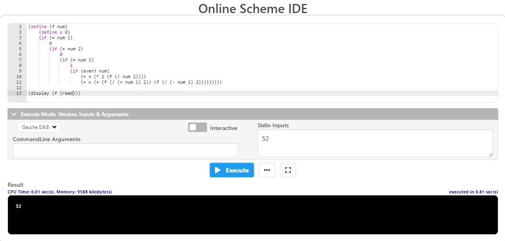
Завдання
6.2 Увести з клавіатури натуральне число n. Вивести всі його цифри по одній в прямому порядку, розділяючи їх пробілами або новими рядками. При розв'язанні цього дозволена тільки рекурсія і целочисельна арифметика. Контрольний тест: введено число 123, отриманий результат: 1 2 3
Код
(define res "")
(define (f num)
(set! res (string-append (number->string (remainder num 10)) " " res))
(if (> 10 num)
res
(f (quotient num 10))))
(display (f 529))
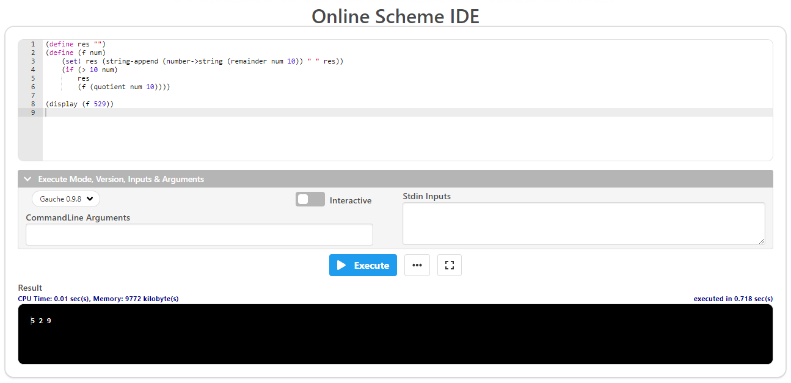
Лабораторна №2
Завдання
6.1. Обчислити значення функції у, розвинувши функцію ln(x) у ряд Тейлора. Аргумент х змінюється від -2 до 2 з кроком 0.5. Визначити похибку
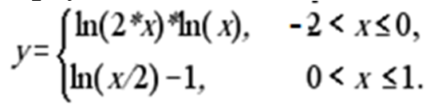
Код
(define count 1)
(define res 0)
(define num 4)
(define (ln y)
(when (< count num)
(if (odd? count)
(set! res (+ res (/ (expt (- y 1) count) count)))
(set! res (- res (/ (expt (- y 1) count) count)))
)
(set! count (+ count 1))
(ln y)
)
res
)
(define x -1.5)
(define (f x)
(when (<= x 1)
(set! count 1)
(if (<= x 0)
(display (* (ln (* 2 x))(ln x)))
(display (- (ln (/ x 2)) 1)))
(newline)
(set! res 0)
(set! x (+ x 0.5))
(f x)
)
)
(f x)
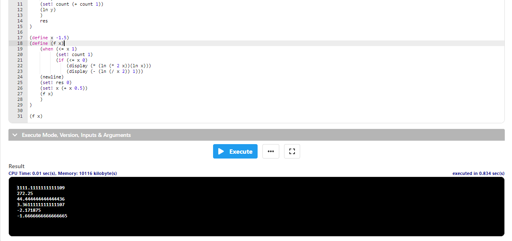
Завдання
6.2. Обчислити нескінчений ланцюговий дріб, задавши значення точності при виклику функції
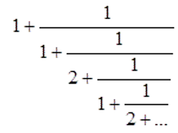
Код
(define res 0)
(define count 0)
(define divider 1)
(define (drob num)
(set! count (+ count 1))
(if (even? count)
(set! divider 2)
(set! divider 1))
(if (< count num)
(set! res (+ 1 (/ divider (drob num))))
1)
)
(display (drob 3))
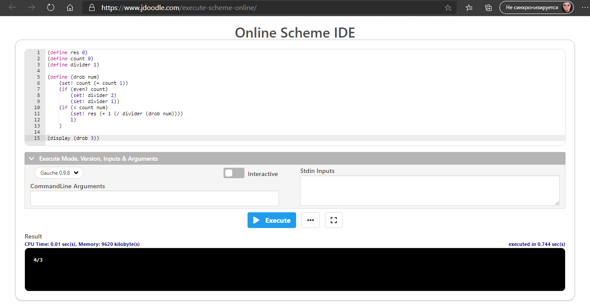
Лабораторна №3
Завдання
6.1. Знайти корені нелінійного рівняння виду x2 + 4sinx = 0. Пошук наближеного значення хоча б одного кореня рівняння f(x) = 0 на відрізку [a; b] здійснювати методами хорд та простої ітерації. Значення a, b інтервалу вибрати самостійно. Порівняти результати розв’язків двома методами.
Код
(define x0 2)
(define x1 10)
(define e 0.01)
(define (f x)
(+
(expt x 2)
(* 4 (sin x))
)
)
(define (hord2 a b eps)
(define c 1)
(while (> (abs c) eps)
(set! c (/ (- (* (f b) a) (* (f a) b)) (- (f b) (f a))))
(if (> (* (f a) (f c)) 0)
(set! a c)
(set! b c)
)
)
(display "Hord")
(newline)
(display c)
(newline)
)
(hord2 x0 x1 e)
(define (iter x0 eps)
(define x1 0)
(set! x1 (* 2 (sqrt (sin x0))))
(if (> (abs (- x1 x0)) eps)
(iter x1 eps)
(display x1)
)
)
(display "Iter")
(newline)
(iter 0.1 0.0001)
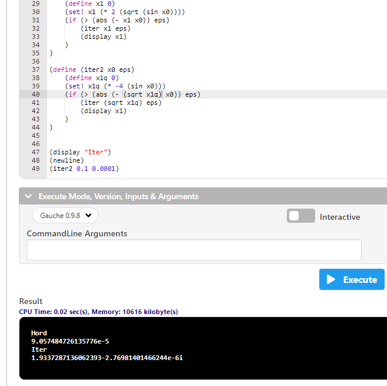
Завдання
6.2 Написати процедури для обчислити інтеграла за формулами прямокутників і Симпсона. Порівняти результати обчислення.
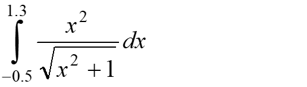
Код
(define (f x)
(/ (expt x 2) (sqrt (+ (expt x 2) 1)))
)
(define (symps a b)
(* (/ (- b a) 6) (+ (f a) (+ (* 4 (f (/ (+ a b) 2))) (f b))))
)
(define (quads a b)
(define sumY 0)
(define n 9)
(define i 0)
(while (> n i)
(set! sumY (+ sumY (f (+ a (* i (/ (- b a) n))))))
(set! i (+ i 1))
)
(* (/ (- b a) n) sumY)
)
(display "Симпсона")
(newline)
(display (symps -0.5 1.3))
(newline)
(display "Прямоугольники")
(newline)
(display (quads -0.5 1.3))
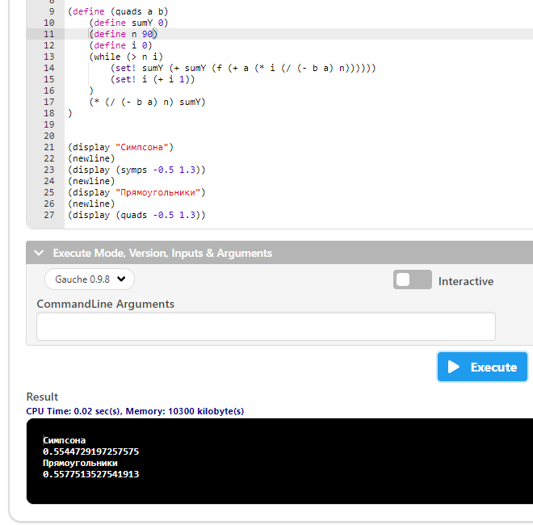
Лабораторна №4
Завдання
6.1. Створити список трикутних чисел, задавши їх кількість. Трикутні числа складають послідовність 1, 3, 6, 10, 15, 21, 28, 36, 45, …. Формула для обчислення трикутного числа: t1 = 1; tn = n + tn−1. Вивести створений список. Виконати такі операції:
a) Створити підсписок з елементів, кратних 5;
b) Видалити із списку усі елементи, що є кратні 5;
c) Перевірити, чи дорівнює сума двох послідовних трикутних чисел повному квадрату числа. Підрахувати кількість повних квадратів чисел, що утворює список
Код
;______________________ФОРМИРУЕМ СПИСОК______________________________________________
(define iterator 1)
(define (lis start n)
(set! iterator (+ iterator 1))
(set! trilist (append trilist (list start)))
(if (= (length trilist) n)
trilist
(lis (+ start iterator) n)
)
)
(define trilist (list))
(display (lis 1 15))
(newline)
;_____________________СПИСОК КРАТНЫХ 5_______________________________________________
(define fiveslist (list))
(define (fives list1)
(cond ((null? list1)
fiveslist)
(else
(if (eqv? (remainder (car list1) 5) 0)
(set! fiveslist (append fiveslist (list (car list1))))
0
)
(fives (cdr list1))
)
)
)
(display (fives trilist))
(newline)
;_____________________СПИСОК НЕ КРАТНЫХ 5_______________________________________________
(define delfives (list))
(define (delfive list2)
(cond ((null? list2)
delfives)
(else
(if (eqv? (remainder (car list2) 5) 0)
0
(set! delfives (append delfives (list (car list2))))
)
(delfive (cdr list2))
)
)
)
(display (delfive trilist))
(newline)
;_____________КОЛИЧЕСТВО КВАДРАТОВ ЧИСЕЛ И ПРОВЕРКА НА КВАДРАТНОСТЬ СОСЕДНИХ___________
(define quads 0)
(define sqrtflag #t)
(define isquad 0)
(define (countquads list3)
(cond ((null? list3)
quads)
(else
(if (eqv? (round (sqrt (car list3))) (sqrt (car list3)))
(set! quads (+ 1 quads))
0
)
(if (= (length list3) 1)
0
(set! sqrtflag (eqv? (round (sqrt (+ (list-ref list3 1) (car list3)))) (sqrt (+ (list-ref list3 1) (car list3)))))
)
(countquads (cdr list3))
)
)
)
(display (countquads trilist))
(newline)
(display sqrtflag)
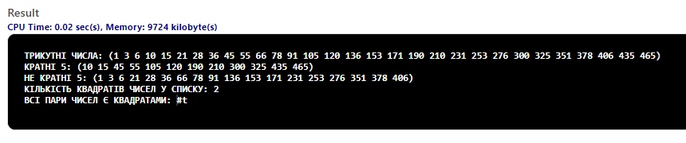
Завдання
6.2 Написати код, що моделює процес управління списком справ на період (день, тиждень, місяць тощо) – сценарій Dropbox Paper, Google Tasks. Нехай існує перелік завдань, яким задані пріоритети та Deadlines. Потрібно утворити список першочергових справ враховуючи пріоритети та терміни виконання. Задачі можуть бути розбиті на підзадачі, які утворюють підсписки. Відсортувати список за термінами виконання та за пріоритетами. Продемонструвати сценарій виконання завдань, вибираючи їх зі списку, вилучаючи зі списку завдання, які вже виконані, пересуваючи завдання у списку відповідно до зміни пріоритету або терміну виконання.
Код

Лабораторна №5
Завдання
6.1. Створити список, елементами якого є раціональні числа у вигляді дробів. Упорядкувати список за зростанням (спаданням). Для розв’язання задачі привести усі дроби до спільного знаменника і порівнювати чисельники. Надрукувати список після приведення елементів до спільного знаменника. Наприклад, задані 7/20, 1/5, 3/10 -> 7/20, 4/20, 6/20 -> 4/20, 6/20, 7/20.

Код
(define temp 1)
(define templi (list))
(define (sort droblist)
(define znam (findznamennyk droblist))
(define chys (findchyselnyk droblist znam))
(print (ra-sort chys) znam)
)
(define (findznamennyk numlist)
(cond ((null? numlist)
temp)
(else
(set! temp (* temp (denominator (car numlist))))
(findznamennyk (cdr numlist))
)
)
)
(define (findchyselnyk numli znamennyk)
(cond ((null? numli)
templi)
(else
(set! templi (append templi (list (* (/ znamennyk (denominator (car numli))) (numerator (car numli))))))
(findchyselnyk (cdr numli) znamennyk)
)
)
)
(define ra-sort
(lambda (numList)
(cond
((null? numList) '())
((= (car numList) (apply max numList))
(cons (car numList) (ra-sort (cdr numList))))
(else (ra-sort (append (cdr numList) (list (car numList))))
))
)
)
(define (print lst znam)
(cond ((null? lst)
0)
(else
(display (car lst))
(display "/")
(display znam)
(display ", ")
(print (cdr lst) znam)
)
)
)
(define l (list 7/20 1/5 3/10))
(sort l)
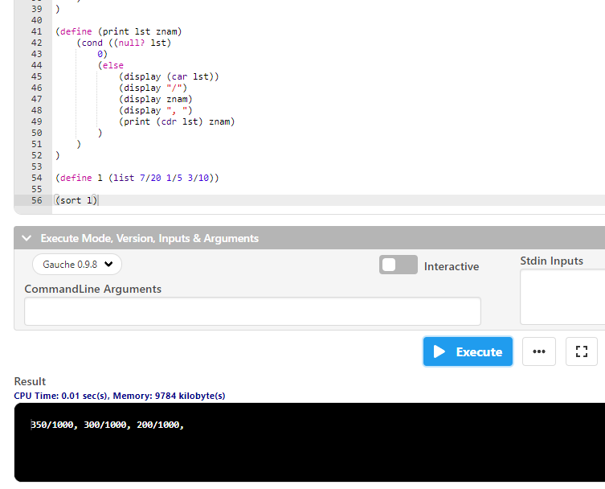
Завдання
6.2 Створити список з трьох комплексних чисел, які задані в алгебраїчній формі a + ib. Розв’язати комплексне рівняння, коефіцієнтами якого при x та y та вільний член є комплексні числа зі списку. Контрольний приклад: (1 + 2i)x+(3 - 5i)y = 1 - 3i. Відповідь x = - 4/11; y = 5/11

Код

Лабораторна №6
Завдання
6.1. Створити вектор цілих чисел. Знайти в векторі всі прості числа, скопіювати їх в новий вектор та надрукувати його.
Код
(define primes (list))
(define counter 2)
(define lencounter 0)
(define (findprime v)
(cond ((eqv? (+ lencounter 0) (vector-length v))
(list->vector primes))
(else
(display (vector-ref v lencounter))
(newline)
(checkprime (vector-ref v lencounter))
(set! lencounter (+ lencounter 1))
(findprime v)
)
)
)
(define (checkprime num)
(while (and (<= (* counter counter) num) (not (eqv? 0 (remainder num counter))))
(set! counter (+ 1 counter))
)
(if (>= (* counter counter) num)
(set! primes (append primes (list num)))
)
(set! counter 2)
)
(define vec #(1 2 3 23 64 43 51 101))
(display (findprime vec))
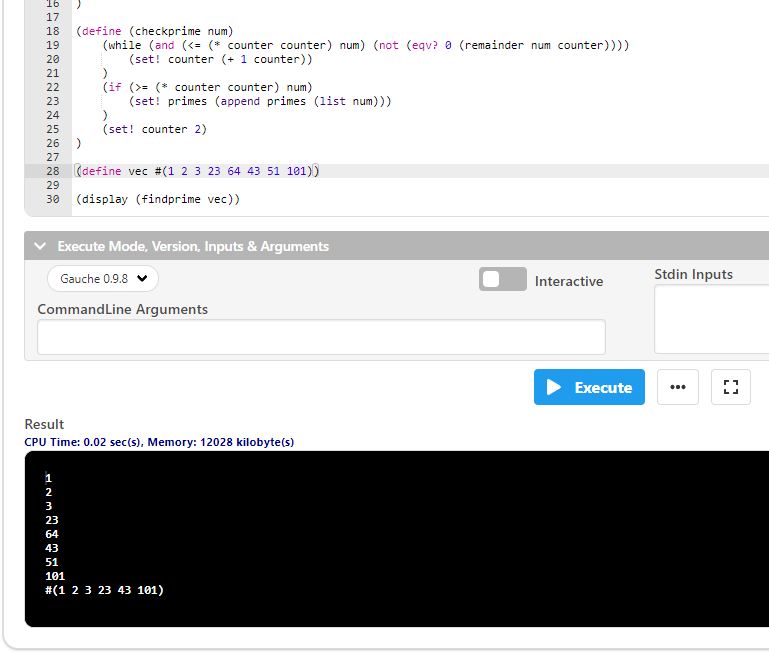
Завдання
6.2. На вокзалі працює k кас, проте черга до них одна. Коли усі каси вільні, перші k клієнтів з черги підходять до кас. Інші чекають своєї черги. Як тільки кого-небудь буде обслужено і відповідна каса звільниться, наступна людина з черги підходить до цієї каси. Так продовжується до тих пір, доки не буде обслужено усіх клієнтів. Визначте час, за який буде обслужено усіх клієнтів.
Код
Лабораторна №7
Завдання
Записати в текстовий файл n рядків тексту, що задаються програмою на функціональній мові програмування. Зчитати рядки із створеного програмою файлу, вивести їх на екран. В початок кожного рядка тексту вставити задане користувачем слово. Записати в новий текстовий файл результат обробки тексту.
Код
Неможливо зробити в online ide

Лабораторна №8
Завдання
Розробити процедури для розкладання многочлена по степенях двочлена.
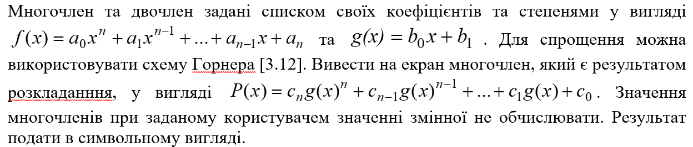
Код
Наверх